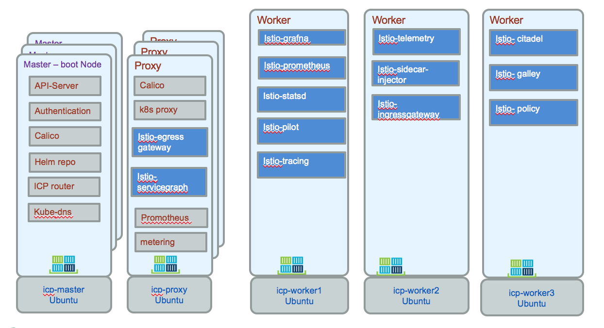

Use ISTIO for service mesh
Some Istio quick summary, and notes from personal study. Last tested on release 1.3.3 on openshift 3.11 under istio-system namespace.
Summary
The main concepts are presented in the istio main page.
Istio helps operators to connect, secure, control and observe services and microservices. It helps managing the service mesh (network of microservices constituting applications).
Value propositions
- Support the cloud native requirements: service discovery, load balancing, failure recovery, metrics, and monitoring, A/B testing, canary rollouts, rate limiting, access control, and end-to-end authentication
- Automatic load balancing for HTTP, gRPC, WebSocket, and TCP traffic.
- Fine-grained control of traffic behavior with rich routing rules, retries, failovers, and fault injection.
- A pluggable policy layer and configuration API supporting access controls, rate limits and quotas.
- Automatic metrics, logs, and traces for all traffic within a cluster, including cluster ingress and egress.
- Secure service-to-service communication in a cluster
Architecture
The istio service mesh is composed of the data plane and control plane.
The data plane groups Envoy proxies deployed as sidecars to the microservice to mediate and control communication. Mixer is a policy and telemetry hub.
The control plane includes Pilot and Citadel, and is responsible for managing and configuring proxies to route traffic, and configuring Mixers to enforce policies and collect telemetry. The following is an example of pod assignment within kubernetes. Egress gateway and servicegraph run on a proxy, while the other components run in the worker nodes.

The command used to get this assignment are:
$ kubectl get nodes
$ kubectl describe node <ipaddress>
kubectl get pods -n istio-system.
The component roles:
| Component | Role |
|---|---|
| Envoy | Proxy to mediate all inbound and outbound traffic for all services in the service mesh. It is deployed as a sidecar container inside the same pod as a service. It supports load balancing, circuit breakers, health checks, fault injection, metrics... |
| Mixer | Enforces access control and usage policies across the service mesh and collects telemetry data from the Envoy proxy. |
| Pilot | Config Envoy and Mixer. Supports service discovery, traffic management, resiliency (timeouts, retries, circuit breakers), intelligent routing (A/B testingm canary deployment..). |
| Citadel | Used for service-to-service and end-user authentication. Enforce security policy based on service identity. |
| Ingress/Egress | Configure path based routing for inbound and outbound external traffic |
| Control Plane API | Underlying Orchestrator such as Kubernetes or Hashicorp Nomad. |
Installation
As Istio is using custom resources like virtualService and destination rules, we need to apply the CRD templates.
oc apply -f istio-1.3.3/install/kubernetes/helm/istio/templates/crds.yaml
Installing a simple Istio deployment for demonstration purpose use:
oc apply -f istio-1.0.5/install/kubernetes/istio-demo.yaml
oc expose svc istio-ingressgateway -n istio-system; \
oc expose svc servicegraph -n istio-system; \
oc expose svc grafana -n istio-system; \
oc expose svc prometheus -n istio-system; \
oc expose svc tracing -n istio-system
CLI
istioctl version
oc apply -f <(istioctl kube-inject -f ../../kubernetes/Deployment.yml) -n tutorial
Others
Service Graph displays a high-level overview of how systems are connected, a tool called Weave Scope provides a powerful visualisation and debugging tool for the entire cluster
kubectl create -f https://cloud.weave.works/launch/k8s/weavescope.yaml
A/B testing with routing rules
Route 50% traffic to one image
Route based on http header argument